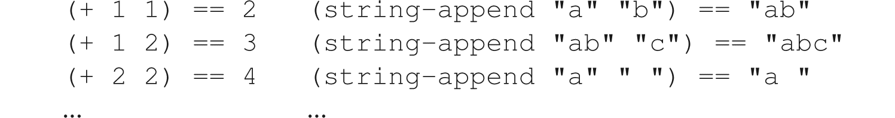

1.2 The Arithmetic of Strings
A widespread prejudice about computers concerns their innards. Many believe that it is all about bits and bytes—whatever those are—and possibly numbers because everyone knows that computers can calculate. While it is true that electrical engineers must understand and study the computer as just such an object, beginning programmers and everyone else need never (ever) succumb to this thinking.
Programming languages are about computing with information, and information comes in all shapes and forms. For example, a program may deal with colors, names, business letters, or conversations between people. Even though we could encode this kind of information as numbers, it would be a horrible idea. Just imagine remembering large tables of codes, such as 0 means “red” and 1 means “hello,” and the like.
Instead, most programming languages provide at least one kind of data that deals with such symbolic information. For now, we use BSL’s strings. Generally speaking, a String is a sequence of the characters that you can enter on the keyboard, plus a few others, about which we aren’t concerned just yet, enclosed in double quotes. In the Prologue, we have seen a number of BSL strings: "hello", "world", "blue", "red", and others. The first two are words that may show up in a conversation or in a letter; the others are names of colors that we may wish to use.
Note We use 1String to refer to the keyboard characters that make up a String. For example, "red" consists of three such 1Strings: "r", "e", "d". As it turns out, there is a bit more to the definition of 1String, but for now thinking of them as Strings of length 1 is fine. End
BSL includes only one operation that exclusively consumes and produces strings: string-append, which, as we have seen in the Prologue, concatenates two given strings into one. Think of string-append as an operation that is just like +. While the latter consumes two (or more) numbers and produces a new number, the former consumes two or more strings and produces a new string:
> (string-append "what a " "lovely " "day" " 4 BSL")
"what a lovely day 4 BSL"
Nothing about the given numbers changes when + adds them up, and nothing about the given strings changes when string-append concatenates them into one big string. If you wish to evaluate such expressions, you just need to think that the obvious laws hold for string-append, similar to those for +:

Exercise 2. Add the following two lines to the definitions area:
(define prefix "hello")
(define suffix "world")
Then use string primitives to create an expression that concatenates prefix and suffix and adds "_" between them. When you run this program, you will see "hello_world" in the interactions area.
See exercise 1 for how to create expressions using DrRacket.